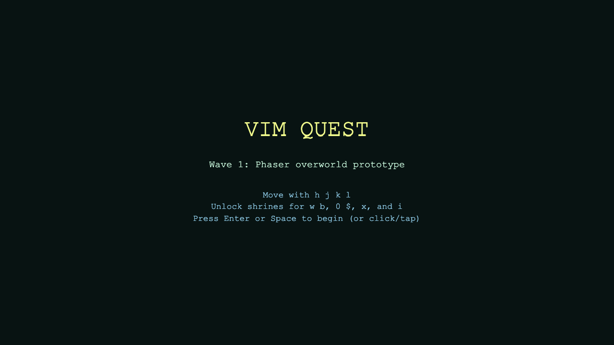
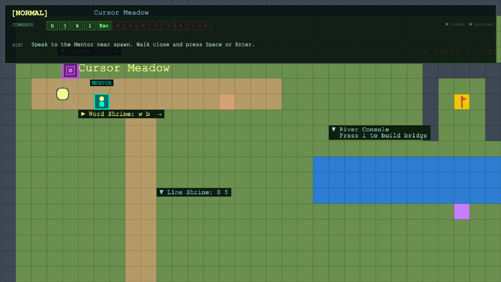
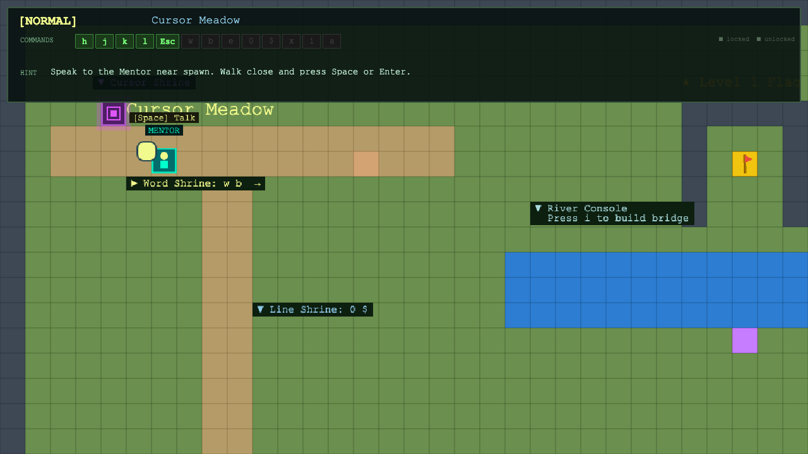
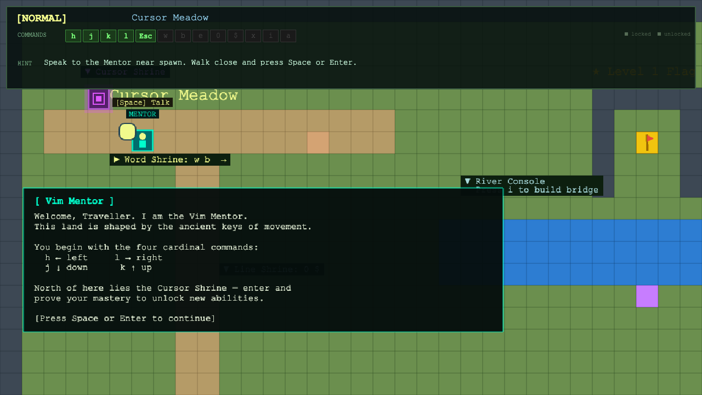
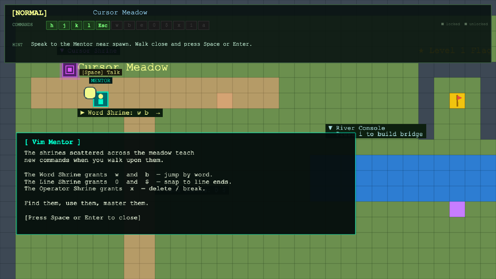
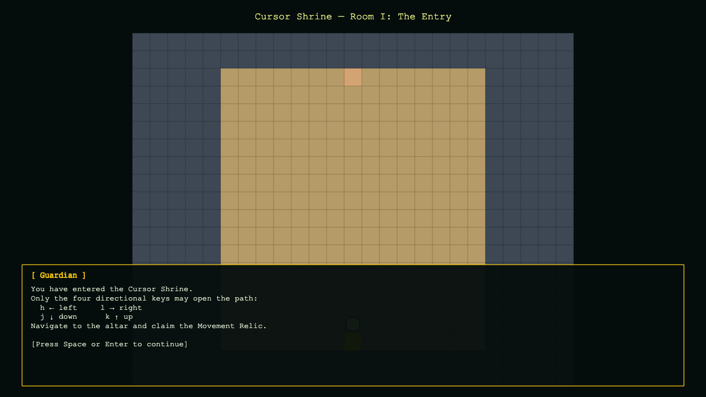
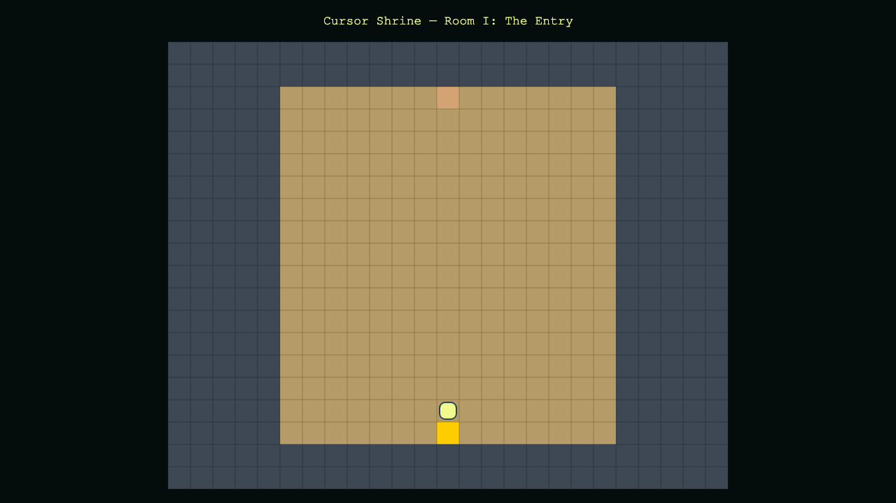
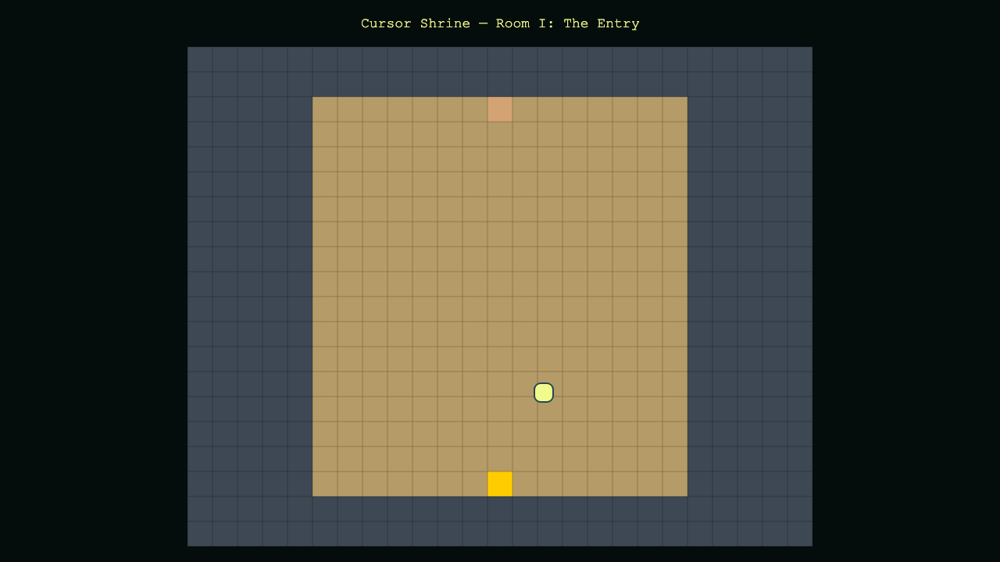
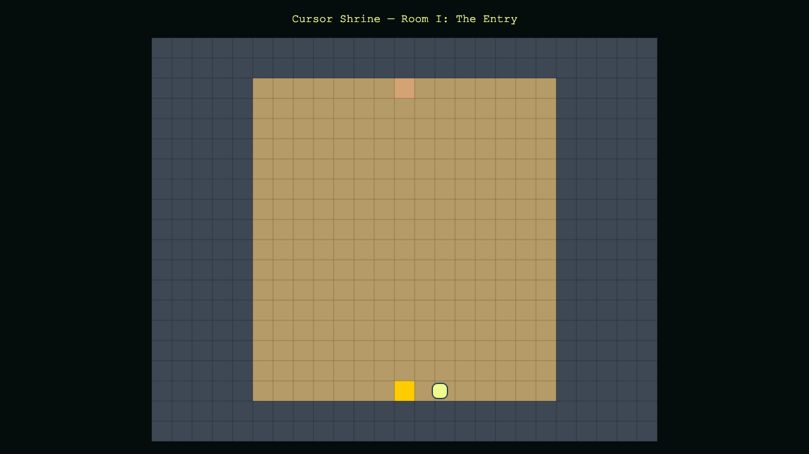
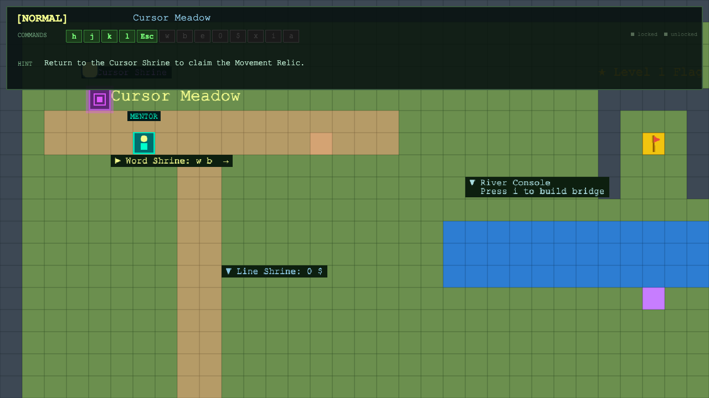

COMMAND_REGISTRY with 17 commands across tiers 1–4. Added dungeonVisited, masteryRelicFound, mentorMet flags to GameState. Default state starts with only h j k l Esc unlocked.| Tier | Commands | Status at Start | How to Unlock |
|---|---|---|---|
| 1 — Basic Movement | h j k l Esc | Unlocked | Available immediately |
| 2 — Navigation | w b e | Locked | Word Shrine (overworld) OR Cursor Shrine relic |
| 3 — Line & Delete | 0 $ x | Locked | Line Shrine / Operator Shrine (overworld) |
| 4 — Editing | i a dd yy p u | Locked | Crate destruction (i), future zones (others) |










| File | Change Type | Description |
|---|---|---|
src/game/state.ts | NEW | COMMAND_REGISTRY, 3 new GameState fields |
src/scenes/DungeonScene.ts | NEW | 3-room dungeon with dialogue, relic, and room transitions |
src/scenes/WorldScene.ts | UPDATED | NPC Mentor, dungeon entrance portal, sleep/wake transition |
src/scenes/UIScene.ts | UPDATED | Command chip grid with locked/unlocked visual diff |
src/scenes/PreloadScene.ts | UPDATED | tile-dungeon and tile-npc procedural textures |
src/systems/tilemap.ts | UPDATED | TILE_IDS.dungeon/npc, DUNGEON_ENTRANCE_POSITION, NPC_MENTOR_POSITION |
src/game/config.ts | UPDATED | DungeonScene added to scene array |
| # | Task | Priority | Notes |
|---|---|---|---|
| 1 | Dungeon Room II maze — wall collisions need physics group refresh | HIGH | Static group walls visible but player can walk through in some rooms |
| 2 | Relic collection in Room III + return to overworld with unlocked commands | HIGH | altar contact handler, flash, dialogue, unlock w b 0 $ |
| 3 | Room-to-room camera transition (fade + respawn) | MED | Already scaffolded in advanceRoom() |
| 4 | Word Woods Zone — w b step-stone traversal | MED | New overworld region east of the gate |
| 5 | Tilemap replacement — load Tiled JSON instead of procedural generation | LOW | public/assets/maps/overworld.json already exists |